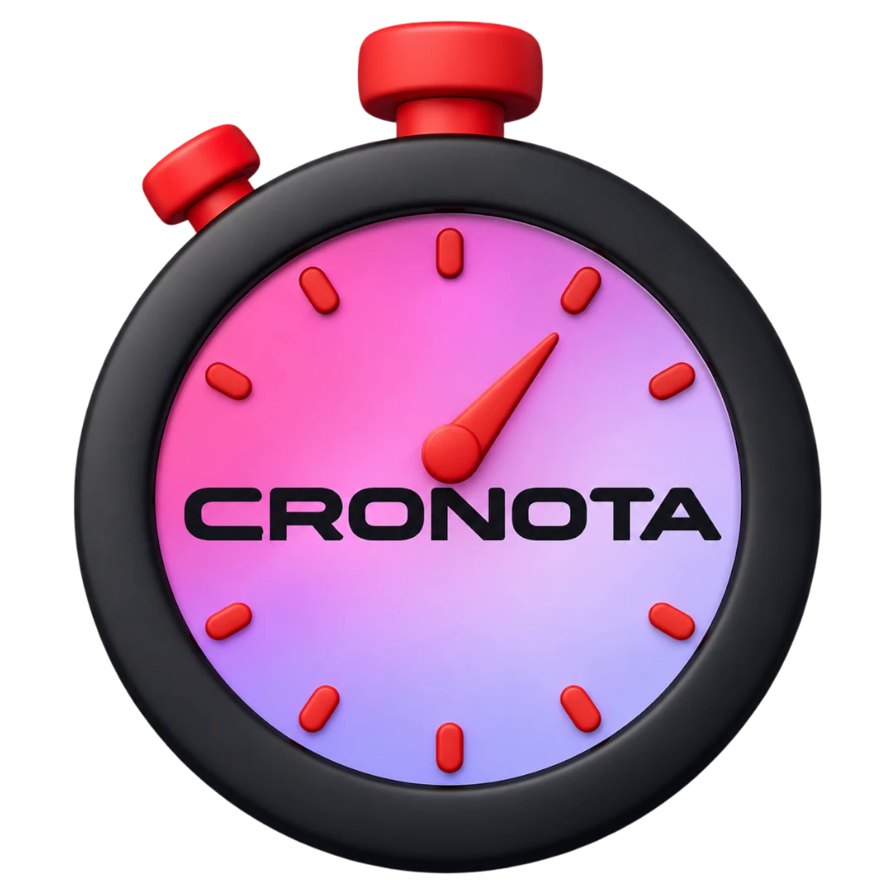

<!DOCTYPE html>
<html>
<head>
<meta charset="utf-8">
<link rel="stylesheet" href="shared.css">
<style>
  /* 2.9.2 · Paso de la versión del instalador a la de la Microsoft Store (ver migracion-store.js).
     Modos: aviso · esperando · listo · bienvenida (este último, ya en la versión de la Store).
     Las animaciones son de entrada y terminan; solo gira algo mientras se espera a la Store. */
  html, body { width:100%; height:100%; }
  body { border-radius:var(--radius); overflow:hidden; }
  .app {
    width:100%; height:100%; padding:26px 34px 22px; position:relative; overflow:hidden;
    display:flex; flex-direction:column; align-items:center; text-align:center;
  }
  .win-drag { position:absolute; top:0; left:0; right:0; height:30px; -webkit-app-region:drag; z-index:3; }

  /* Fondo: dos luces suaves del color del tema y una de los colores de Microsoft. */
  .luces { position:absolute; inset:0; pointer-events:none; z-index:0; }
  .luces i { position:absolute; border-radius:50%; filter:blur(48px); opacity:0; animation:luzEntra 1.4s ease-out .1s forwards; }
  .luces i:nth-child(1) { width:300px; height:300px; left:-90px; top:-80px; background:color-mix(in srgb, var(--accent) 55%, transparent); }
  .luces i:nth-child(2) { width:260px; height:260px; right:-90px; top:40px; background:color-mix(in srgb, #00a4ef 45%, transparent); animation-delay:.25s; }
  .luces i:nth-child(3) { width:240px; height:240px; left:30%; bottom:-140px; background:color-mix(in srgb, #f25022 30%, transparent); animation-delay:.4s; }
  @keyframes luzEntra { to { opacity:.55; } }

  #contenido { position:relative; z-index:1; flex:1; width:100%; display:flex; flex-direction:column; align-items:center; }
  #contenido.centrado { justify-content:center; padding-bottom:30px; }
  #contenido.centrado .acciones { margin-top:14px; }

  /* ── El logo, protagonista ─────────────────────────────────────────────── */
  .escena { position:relative; width:164px; height:164px; flex-shrink:0; margin:0 0 10px; }
  .escena.pequena { width:124px; height:124px; margin-bottom:6px; }
  .halo {
    position:absolute; inset:14px; border-radius:50%;
    background:radial-gradient(circle, color-mix(in srgb, var(--accent) 45%, transparent) 0%, transparent 68%);
    opacity:0; transform:scale(.6); animation:haloEntra .9s cubic-bezier(.2,.9,.25,1) .15s forwards;
  }
  @keyframes haloEntra { to { opacity:1; transform:scale(1.15); } }
  /* El anillo con los cuatro colores de Microsoft se dibuja una vez alrededor del logo. */
  .anillo { position:absolute; inset:0; transform:rotate(-90deg); }
  .anillo circle { fill:none; stroke-width:5; stroke-linecap:round; stroke-dasharray:118 471; stroke-dashoffset:118; opacity:0; }
  .anillo circle:nth-child(1) { stroke:#f25022; animation:trazo .9s cubic-bezier(.3,.7,.2,1) .35s forwards; }
  .anillo circle:nth-child(2) { stroke:#7fba00; animation:trazo .9s cubic-bezier(.3,.7,.2,1) .5s forwards; }
  .anillo circle:nth-child(3) { stroke:#00a4ef; animation:trazo .9s cubic-bezier(.3,.7,.2,1) .65s forwards; }
  .anillo circle:nth-child(4) { stroke:#ffb900; animation:trazo .9s cubic-bezier(.3,.7,.2,1) .8s forwards; }
  @keyframes trazo { 0% { opacity:1; stroke-dashoffset:118; } 100% { opacity:1; stroke-dashoffset:4; } }
  .logo {
    position:absolute; left:50%; top:50%; width:72%; height:72%; translate:-50% -50%;
    object-fit:contain; filter:drop-shadow(0 14px 22px rgba(0,0,0,.35));
    opacity:0; transform:scale(.55) rotate(-14deg);
    animation:logoEntra 1s cubic-bezier(.34,1.56,.64,1) .2s forwards, logoClic .5s ease-in-out 1.55s 1;
  }
  @keyframes logoEntra { 60% { opacity:1; } to { opacity:1; transform:none; } }
  /* Un "clic" del cronómetro, una sola vez, como si se pusiera en marcha. */
  @keyframes logoClic { 0%,100% { transform:none; } 35% { transform:translateY(3px) scale(.96, 1.03); } 70% { transform:translateY(-2px) scale(1.02); } }
  /* Los cuatro cuadros de Microsoft salen de detrás del logo y se quedan en sus esquinas. */
  .cuadro { position:absolute; left:50%; top:50%; width:16px; height:16px; border-radius:4px; opacity:0; translate:-50% -50%; animation:cuadroSale .8s cubic-bezier(.34,1.56,.64,1) forwards; }
  .cuadro.c1 { background:#f25022; --x:-72px; --y:-62px; animation-delay:.95s; }
  .cuadro.c2 { background:#7fba00; --x: 72px; --y:-62px; animation-delay:1.05s; }
  .cuadro.c3 { background:#00a4ef; --x:-72px; --y: 62px; animation-delay:1.15s; }
  .cuadro.c4 { background:#ffb900; --x: 72px; --y: 62px; animation-delay:1.25s; }
  .pequena .cuadro { width:11px; height:11px; border-radius:3px; --x2:.76; }
  @keyframes cuadroSale { from { opacity:0; transform:scale(.2); } to { opacity:1; transform:translate(calc(var(--x) * var(--x2, 1)), calc(var(--y) * var(--x2, 1))) rotate(12deg); } }
  /* Mientras se espera a la Store, el anillo sí gira (y solo entonces). */
  .esperando .anillo { animation:girar 1.6s linear infinite; }
  @keyframes girar { to { transform:rotate(270deg); } }
  /* Listo: una insignia con la marca de hecho sobre el logo. */
  .hecho {
    position:absolute; right:10px; bottom:12px; width:46px; height:46px; border-radius:50%;
    display:flex; align-items:center; justify-content:center; color:#fff;
    background:var(--success, #34d399); box-shadow:0 8px 20px rgba(0,0,0,.3), 0 0 0 4px color-mix(in srgb, var(--success, #34d399) 30%, transparent);
    opacity:0; transform:scale(.3); animation:hechoEntra .6s cubic-bezier(.34,1.56,.64,1) .6s forwards;
  }
  @keyframes hechoEntra { to { opacity:1; transform:none; } }

  /* ── Textos ────────────────────────────────────────────────────────────── */
  .entra { opacity:0; transform:translateY(10px); animation:entra .55s cubic-bezier(.2,.8,.2,1) forwards; }
  @keyframes entra { to { opacity:1; transform:none; } }
  .badge {
    font-family:var(--font-display); font-size:10.5px; font-weight:700; letter-spacing:.12em; text-transform:uppercase;
    color:var(--accent); padding:5px 12px; border-radius:999px; margin-bottom:10px;
    background:color-mix(in srgb, var(--accent2) 18%, transparent); border:1px solid color-mix(in srgb, var(--accent) 34%, transparent);
  }
  .titulo { font-family:var(--font-display); font-size:22px; font-weight:800; line-height:1.18; letter-spacing:-.01em; max-width:420px; }
  .sub { font-size:13.5px; line-height:1.5; color:var(--text2); max-width:400px; margin-top:7px; }

  .ventajas { list-style:none; margin:14px 0 0; padding:0; width:100%; max-width:400px; display:flex; flex-direction:column; gap:6px; text-align:left; }
  .ventajas li {
    display:flex; gap:12px; align-items:flex-start; padding:8px 12px; border-radius:14px;
    background:color-mix(in srgb, var(--text) 5%, transparent); border:1px solid color-mix(in srgb, var(--text) 8%, transparent);
  }
  .ventajas .ic { width:28px; height:28px; border-radius:9px; flex-shrink:0; display:flex; align-items:center; justify-content:center; color:var(--accent); background:color-mix(in srgb, var(--accent2) 22%, transparent); }
  .ventajas b { display:block; font-size:13px; font-weight:650; }
  .ventajas span { display:block; font-size:12px; color:var(--text2); line-height:1.4; margin-top:1px; }

  .pasos { list-style:none; margin:16px 0 0; padding:0; width:100%; max-width:400px; display:flex; flex-direction:column; gap:10px; text-align:left; counter-reset:paso; }
  .pasos li { display:flex; gap:12px; align-items:flex-start; font-size:13px; line-height:1.45; }
  .pasos li::before {
    counter-increment:paso; content:counter(paso); flex-shrink:0; width:24px; height:24px; border-radius:50%;
    display:flex; align-items:center; justify-content:center; font-size:12px; font-weight:700;
    color:var(--accent); background:color-mix(in srgb, var(--accent2) 22%, transparent);
  }

  .acciones { margin-top:auto; padding-top:14px; display:flex; flex-direction:column; align-items:center; gap:8px; width:100%; }
  .fila { display:flex; gap:8px; justify-content:center; flex-wrap:wrap; }
  .fila .btn-primary, .fila .btn-ghost { padding:10px 18px; font-size:13px; }
  .btn-texto { background:none; border:0; color:var(--text2); font:inherit; font-size:12.5px; cursor:pointer; padding:4px 10px; border-radius:8px; }
  .btn-texto:hover { color:var(--text); background:color-mix(in srgb, var(--text) 7%, transparent); }
  .nota { font-size:11.5px; color:var(--text2); opacity:.85; line-height:1.45; max-width:380px; }
  .mensaje { font-size:12.5px; line-height:1.45; color:var(--text); padding:9px 12px; border-radius:12px; max-width:400px; margin-top:12px;
    background:color-mix(in srgb, #ffb900 16%, transparent); border:1px solid color-mix(in srgb, #ffb900 40%, transparent); }
  .barra { width:100%; max-width:300px; height:8px; border-radius:999px; margin-top:18px; overflow:hidden; background:color-mix(in srgb, var(--accent2) 22%, transparent); }
  .barra i { display:block; height:100%; width:0; border-radius:999px; background:var(--accent2); animation:llenar 2.3s cubic-bezier(.4,0,.2,1) .2s forwards; }
  @keyframes llenar { to { width:100%; } }

  /* ── Botón de la Microsoft Store ──────────────────────────────────────────
     A partir de "brutalist-button" de Uiverse.io (by 0xnihilism, licencia MIT), con la letra
     de la app y el texto en castellano. */
  .boton-store {
    display:flex; align-items:center; gap:12px; cursor:pointer; min-width:254px; height:62px; padding:0 20px;
    background-color:#000; color:#fff; font-family:inherit; font-weight:800; text-align:left;
    border:3px solid #fff; outline:3px solid #000; box-shadow:6px 6px 0 #00a4ef;
    border-radius:0 !important;   /* mac.css redondea todos los botones; este va cuadrado */
    transition:all .1s ease-out; box-sizing:border-box; position:relative; overflow:hidden;
  }
  .boton-store::before {
    content:''; position:absolute; top:0; left:-100%; width:100%; height:100%; z-index:1; opacity:0;
    background:linear-gradient(90deg, transparent, rgba(255,255,255,.8), transparent);
  }
  .boton-store:hover::before { opacity:1; animation:brillo 2s infinite; }
  @keyframes brillo { 0% { left:-100%; } 100% { left:100%; } }
  /* En el original la sombra al pasar el ratón es negra; sobre los temas oscuros no se vería,
     así que ahí sigue azul y solo es negra en los claros. */
  .boton-store:hover { transform:translate(-4px, -4px); box-shadow:10px 10px 0 #00a4ef; }
  :root[data-scheme="light"] .boton-store:hover { box-shadow:10px 10px 0 #000; }
  .boton-store:active { transform:translate(4px, 4px); box-shadow:0 0 0 #00a4ef; background-color:#fff; color:#000; border-color:#000; }
  .boton-store:focus-visible { outline-color:var(--accent); }
  .ms-logo { display:grid; grid-template-columns:repeat(2, 1fr); gap:2px; width:28px; height:28px; flex-shrink:0; position:relative; z-index:2; transition:transform .2s ease-out; }
  .boton-store:hover .ms-logo { transform:rotate(-10deg) scale(1.1); }
  .boton-store:active .ms-logo { transform:rotate(10deg) scale(.9); }
  .ms-logo i:nth-child(1) { background:#f25022; }
  .ms-logo i:nth-child(2) { background:#7fba00; }
  .ms-logo i:nth-child(3) { background:#00a4ef; }
  .ms-logo i:nth-child(4) { background:#ffb900; }
  .boton-texto { display:flex; flex-direction:column; line-height:1.15; position:relative; z-index:2; transition:transform .2s ease-out; }
  .boton-store:hover .boton-texto { transform:skew(-5deg); }
  .boton-store:active .boton-texto { transform:skew(5deg); }
  .boton-texto small { font-size:11px; font-weight:700; letter-spacing:.06em; text-transform:uppercase; }
  .boton-texto strong { font-size:17px; font-weight:800; letter-spacing:.02em; text-transform:uppercase; }
  /* Entra y da un empujoncito, una vez, para que se vea que es ahí. Va con "translate" y no
     con "transform": una animación que se queda puesta (forwards) manda sobre :hover y
     :active, y el botón dejaría de moverse al pasar el ratón y al pulsarlo. */
  .boton-store { opacity:0; animation:entraBoton .5s cubic-bezier(.2,.8,.2,1) .95s forwards, sacudida .5s ease-in-out 2.2s 1; }
  @keyframes entraBoton { from { opacity:0; translate:0 10px; } to { opacity:1; translate:0 0; } }
  @keyframes sacudida { 0%,100% { translate:0 0; } 30% { translate:-3px -3px; } 60% { translate:1px 1px; } }

  @media (prefers-reduced-motion: reduce) {
    *, *::before, *::after { animation-duration:.01ms !important; animation-delay:0s !important; animation-iteration-count:1 !important; transition:none !important; }
  }
</style>
<!-- 2.8: estilo «Suave» (rediseño Mac). Va el último para mandar sobre lo de arriba. -->
<link rel="stylesheet" href="mac.css">
</head>
<body>
<div class="app">
  <div class="win-drag" title="Arrastra para mover la ventana"></div>
  <div class="luces"><i></i><i></i><i></i></div>
  <div id="contenido"></div>
</div>

<script src="shared.js"></script>
<script>
const { ipcRenderer } = require('electron');

// Para las capturas sin la app (tools/snap.js): migrar.html?modo=aviso&tareas=57&grupos=10
const parametros = new URLSearchParams(location.search);
let datos = {
  modo: parametros.get('modo') || 'aviso',
  tareas: Number(parametros.get('tareas')) || 0,
  grupos: Number(parametros.get('grupos')) || 0,
  traidas: parametros.get('traidas') === '1',
  aviso: null,
};
let modoPintado = null;

const ICONOS = {
  maleta: '<svg width="16" height="16" viewBox="0 0 24 24" fill="none" stroke="currentColor" stroke-width="2.2" stroke-linecap="round" stroke-linejoin="round"><path d="M20 7H4a2 2 0 0 0-2 2v9a2 2 0 0 0 2 2h16a2 2 0 0 0 2-2V9a2 2 0 0 0-2-2z"/><path d="M16 7V5a2 2 0 0 0-2-2h-4a2 2 0 0 0-2 2v2"/></svg>',
  flechas: '<svg width="16" height="16" viewBox="0 0 24 24" fill="none" stroke="currentColor" stroke-width="2.2" stroke-linecap="round" stroke-linejoin="round"><path d="M21 12a9 9 0 0 1-9 9 9.75 9.75 0 0 1-6.74-2.74L3 16"/><path d="M3 21v-5h5"/><path d="M3 12a9 9 0 0 1 9-9 9.75 9.75 0 0 1 6.74 2.74L21 8"/><path d="M21 3v5h-5"/></svg>',
  escoba: '<svg width="16" height="16" viewBox="0 0 24 24" fill="none" stroke="currentColor" stroke-width="2.2" stroke-linecap="round" stroke-linejoin="round"><path d="M3 6h18"/><path d="M19 6l-1 14a2 2 0 0 1-2 2H8a2 2 0 0 1-2-2L5 6"/><path d="M10 11v6M14 11v6"/></svg>',
  escudo: '<svg width="16" height="16" viewBox="0 0 24 24" fill="none" stroke="currentColor" stroke-width="2.2" stroke-linecap="round" stroke-linejoin="round"><path d="M12 22s8-4 8-10V5l-8-3-8 3v7c0 6 8 10 8 10z"/><path d="M9 12l2 2 4-4"/></svg>',
  inicio: '<svg width="16" height="16" viewBox="0 0 24 24" fill="none" stroke="currentColor" stroke-width="2.2" stroke-linecap="round" stroke-linejoin="round"><rect x="3" y="3" width="7" height="7" rx="1.5"/><rect x="14" y="3" width="7" height="7" rx="1.5"/><rect x="3" y="14" width="7" height="7" rx="1.5"/><rect x="14" y="14" width="7" height="7" rx="1.5"/></svg>',
  hecho: '<svg width="26" height="26" viewBox="0 0 24 24" fill="none" stroke="currentColor" stroke-width="3" stroke-linecap="round" stroke-linejoin="round"><path d="M5 12l5 5L19 7"/></svg>',
};

function esc(s) { return String(s == null ? '' : s).replace(/&/g, '&amp;').replace(/</g, '&lt;').replace(/>/g, '&gt;'); }
function plural(n, uno, varios) { return `${n} ${n === 1 ? uno : varios}`; }
function enviar(type) { ipcRenderer.send('action', { type }); }
// Cada bloque entra un poco después del anterior.
function retraso(i) { return `style="animation-delay:${(0.55 + i * 0.09).toFixed(2)}s"`; }

function escena(pequena, extra) {
  return `
    <div class="escena ${pequena ? 'pequena' : ''}">
      <div class="halo"></div>
      <svg class="anillo" viewBox="0 0 200 200"><circle cx="100" cy="100" r="94" transform="rotate(0 100 100)"/><circle cx="100" cy="100" r="94" transform="rotate(90 100 100)"/><circle cx="100" cy="100" r="94" transform="rotate(180 100 100)"/><circle cx="100" cy="100" r="94" transform="rotate(270 100 100)"/></svg>
      <i class="cuadro c1"></i><i class="cuadro c2"></i><i class="cuadro c3"></i><i class="cuadro c4"></i>
      
      ${extra || ''}
    </div>`;
}

function botonStore() {
  return `
    <button class="boton-store" onclick="enviar('migracion-store')">
      <span class="ms-logo" aria-hidden="true"><i></i><i></i><i></i><i></i></span>
      <span class="boton-texto"><small>Obtener en</small><strong>Microsoft Store</strong></span>
    </button>`;
}

function mensaje() { return datos.aviso ? `<div class="mensaje entra">${esc(datos.aviso)}</div>` : ''; }

const MODOS = {
  aviso: () => `
    ${escena(false)}
    <div class="badge entra" ${retraso(0)}>Buenas noticias</div>
    <div class="titulo entra" ${retraso(1)}>Cronota se muda a la Microsoft&nbsp;Store</div>
    <div class="sub entra" ${retraso(2)}>La misma app, con tus tareas y tus horas. Desde ahora se instala y se actualiza desde la Store.</div>
    <ul class="ventajas">
      <li class="entra" ${retraso(3)}><div class="ic">${ICONOS.maleta}</div><div><b>Tus tareas se vienen contigo</b><span>${datos.tareas ? `Las ${plural(datos.tareas, 'tarea', 'tareas')}${datos.grupos ? ` y sus ${plural(datos.grupos, 'sección', 'secciones')}` : ''}, sin exportar nada.` : 'Sin exportar ni importar nada.'}</span></div></li>
      <li class="entra" ${retraso(4)}><div class="ic">${ICONOS.flechas}</div><div><b>Se actualiza sola</b><span>Desde la Store, sin descargas ni avisos de Windows.</span></div></li>
      <li class="entra" ${retraso(5)}><div class="ic">${ICONOS.escudo}</div><div><b>Tus datos, a salvo</b><span>Antes de cambiar se guarda una copia en Documentos › Cronota.</span></div></li>
    </ul>
    <div class="acciones">
      ${botonStore()}
      <button class="btn-texto entra" ${retraso(7)} onclick="enviar('migracion-mas-tarde')">Más tarde</button>
      <div class="nota entra" ${retraso(8)}>Esta versión puedes quitarla después desde Configuración › Aplicaciones.</div>
    </div>`,

  esperando: () => `
    ${escena(true)}
    <div class="titulo entra" ${retraso(0)}>Pulsa «Obtener» en la Store</div>
    <div class="sub entra" ${retraso(1)}>Te la hemos abierto. Cuando termine de instalarse, Cronota se cambia sola.</div>
    <ol class="pasos">
      <li class="entra" ${retraso(2)}>En la Microsoft Store, pulsa «Obtener» o «Instalar».</li>
      <li class="entra" ${retraso(3)}>Espera a que termine. No hace falta que la abras.</li>
      <li class="entra" ${retraso(4)}>Esta versión se cierra y se abre la nueva con tus ${plural(datos.tareas, 'tarea', 'tareas')}.</li>
    </ol>
    ${mensaje()}
    <div class="acciones">
      <div class="fila entra" ${retraso(5)}>
        <button class="btn-primary" onclick="enviar('migracion-ya-instalada')">Ya la he instalado</button>
        <button class="btn-ghost" onclick="enviar('migracion-abrir-store')">Abrir la Store otra vez</button>
      </div>
      <button class="btn-texto entra" ${retraso(6)} onclick="enviar('migracion-cerrar')">Cerrar esta ventana</button>
      <div class="nota entra" ${retraso(7)}>Aunque la cierres, en cuanto la Store termine Cronota se cambia sola.</div>
    </div>`,

  listo: () => `
    ${escena(false, `<div class="hecho">${ICONOS.hecho}</div>`)}
    <div class="titulo entra" ${retraso(0)}>¡Listo!</div>
    <div class="sub entra" ${retraso(1)}>Guardando tus datos y abriendo Cronota de la Microsoft Store…</div>
    <div class="barra entra" ${retraso(2)}><i></i></div>
    <div class="acciones"><div class="nota entra" ${retraso(3)}>Tarda unos segundos. No hace falta que hagas nada.</div></div>`,

  bienvenida: () => `
    ${escena(false)}
    <div class="badge entra" ${retraso(0)}>Ya estás en la Microsoft Store</div>
    <div class="titulo entra" ${retraso(1)}>¡Bienvenido a la nueva Cronota!</div>
    <div class="sub entra" ${retraso(2)}>${datos.tareas
      ? `${datos.traidas ? 'Hemos traído' : 'Aquí están'} tus ${plural(datos.tareas, 'tarea', 'tareas')}${datos.grupos ? ` y ${plural(datos.grupos, 'sección', 'secciones')}` : ''}, tal y como las dejaste.`
      : 'Todo listo para seguir contando tus horas.'}</div>
    <ul class="ventajas">
      <li class="entra" ${retraso(3)}><div class="ic">${ICONOS.flechas}</div><div><b>Se actualiza sola</b><span>Las versiones nuevas te llegan desde la Store.</span></div></li>
      <li class="entra" ${retraso(4)}><div class="ic">${ICONOS.inicio}</div><div><b>Arranca con Windows</b><span>Puedes cambiarlo en Configuración › Aplicaciones › Inicio.</span></div></li>
      <li class="entra" ${retraso(5)}><div class="ic">${ICONOS.escudo}</div><div><b>Una copia cada día</b><span>En Documentos › Cronota › Copias automáticas.</span></div></li>
    </ul>
    <div class="acciones">
      <div class="fila entra" ${retraso(6)}><button class="btn-primary" onclick="enviar('migracion-cerrar')">¡Genial!</button></div>
      <div class="nota entra" ${retraso(7)}>La versión antigua, la del instalador, puedes quitarla desde Configuración › Aplicaciones.</div>
    </div>`,
};

function pintar() {
  const caja = document.getElementById('contenido');
  const modo = MODOS[datos.modo] ? datos.modo : 'aviso';
  // Mismo modo (p. ej. llega un aviso mientras se espera): solo se cambia el mensaje, sin
  // repetir las animaciones de entrada.
  if (modo === modoPintado) {
    const viejo = caja.querySelector('.mensaje');
    if (viejo) viejo.remove();
    const ancla = caja.querySelector('.pasos');
    if (datos.aviso && ancla) ancla.insertAdjacentHTML('afterend', mensaje());
    return;
  }
  modoPintado = modo;
  document.body.classList.toggle('esperando', modo === 'esperando');
  caja.classList.toggle('centrado', modo === 'listo');
  caja.innerHTML = MODOS[modo]();
}

ipcRenderer.on('migracion', (_e, d) => { datos = { ...datos, ...d }; pintar(); });
ipcRenderer.send('action', { type: 'get-migracion' });
pintar();
</script>
</body>
</html>
